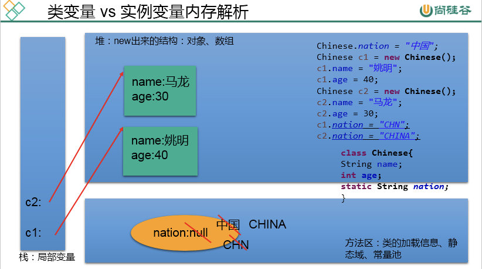
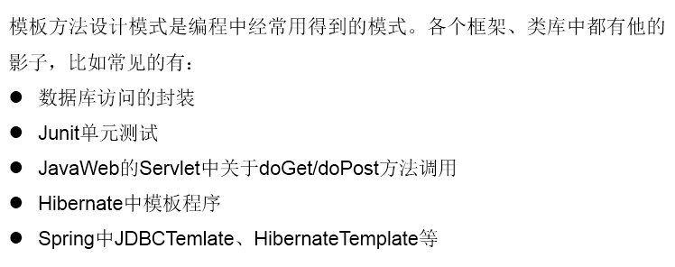
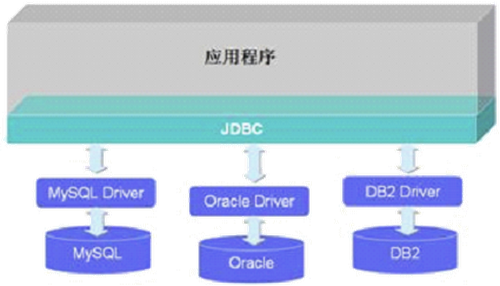
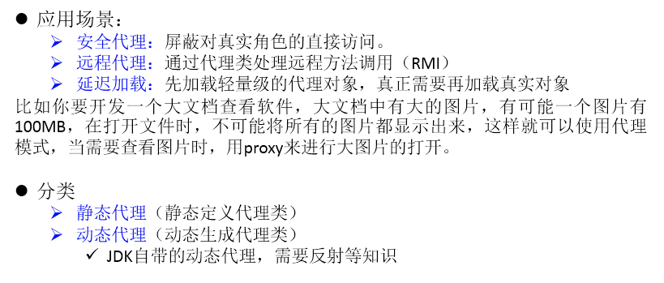

1 关键字：static
static：静态的
可以用来修饰的结构：主要用来修饰类的内部结构，即属性、方法、代码块、内部类。
1.1 static修饰属性
static修饰的属性：静态变量（或类变量）
属性根据是否使用static修饰，又分为：静态属性 vs 非静态属性(实例变量)
- 实例变量：我们创建了类的多个对象，每个对象都独立的拥有一套类中的非静态属性。当修改其中一个对象中的非静态属性时，不会导致其他对象中同样的属性值的修改。
- 静态变量：我们创建了类的多个对象，多个对象共享同一个静态变量。当通过某一个对象修改静态变量时，会导致其他对象调用此静态变量时也是修改后的。
static修饰属性的其他说明：
- 静态变量随着类的加载而加载。可以通过
类.静态变量的方式进行调用。 - 静态变量的加载要早于对象的创建。
- 由于类只会加载一次，则静态变量在内存中也只会存在一份：存在方法区的静态域中。
| 调用的方式 | 静态变量 | 实例变量 |
|---|---|---|
| 类 |
yes | no |
| 对象 | yes | yes |
静态属性举例：System.out; Math.PI…
静态变量内存解析：

1.2 static修饰方法
static修饰的方法：静态方法（或类方法）
随着类的加载而加载，可以通过类.静态方法的方式进行调用。
| 调用的方式 | 静态方法 | 非静态方法 |
|---|---|---|
| 类 |
yes | no |
| 对象 | yes | yes |
- 静态方法中，只能调用静态的方法或属性。
- 非静态方法中，既可以调用非静态的方法或属性，也可以调用静态的方法或属性。
1.3 static的使用注意
- 在静态的方法内，不能使用this关键字、super关键字
- 关于静态属性和静态方法的使用，大家都从生命周期的角度去理解
如何判定属性和方法应该使用static关键字：
关于属性：
- 属性是可以被多个对象所共享的，不会随着对象的不同而不同的。
- 类中的常量也常常声明为static。
关于方法：
- 操作静态属性的方法，通常设置为static的
- 工具类中的方法，习惯上声明为static的。 比如：Math、Arrays、Collections
1.4 单例模式
设计模式：是在大量的实践中总结和理论化之后优的代码结构、编程风格、以及解决问题的思考方式。
常用设计模式（23种经典的设计模式 GOF）：
- 创建型模式，共5种：工厂方法模式、抽象工厂模式、单例模式、建造者模式、原型模式。
- 结构型模式，共7种：适配器模式、装饰器模式、代理模式、外观模式、桥接模式、组合模式、享元模式。
- 行为型模式，共11种：策略模式、模板方法模式、观察者模式、迭代器模式、责任链模式、命令模式、备忘录模式、状态模式、访问者模式、中介者模式、解释器模式。
单例模式：采取一定的方法保证在整个的软件系统中，对某个类只能存在一个对象实例。
// 饿汉式1：
class Bank{
//1.私化类的构造器
private Bank(){
}
//2.内部创建类的对象
//4.要求此对象也必须声明为静态的
private static Bank instance = new Bank();
//3.提供公共的静态的方法，返回类的对象
public static Bank getInstance(){
return instance;
}
}
// 饿汉式2：使用了静态代码块
class Order{
//1.私化类的构造器
private Order(){
}
//2.声明当前类对象，没初始化
//4.此对象也必须声明为static的
private static Order instance = null;
static{
instance = new Order();
}
//3.声明public、static的返回当前类对象的方法
public static Order getInstance(){
return instance;
}
}
// 懒汉式：
class Order{
//1.私化类的构造器
private Order(){
}
//2.声明当前类对象，没初始化
//4.此对象也必须声明为static的
private static Order instance = null;
//3.声明public、static的返回当前类对象的方法
public static Order getInstance(){
if(instance == null){
instance = new Order();
}
return instance;
}
}两种方式对比：
饿汉式：
- 好处：饿汉式是线程安全的
- 坏处：对象加载时间过长。
懒汉式：
- 好处：延迟对象的创建。
- 目前的写法坏处：线程不安全。—>到多线程内容时，再修改
2 类的结构之四：代码块
代码块的作用：用来初始化类、对象的信息。
代码块要是使用修饰符，只能使用static。因此代码块被分为：静态代码块 vs 非静态代码块。
2.1 静态代码块和非静态代码块
静态代码块：
- 内部可以输出语句
- 随着类的加载而执行,而且只执行一次
- 作用：初始化类的信息
- 如果一个类中定义了多个静态代码块，则按照声明的先后顺序执行
- 静态代码块的执行要优先于非静态代码块的执行
- 静态代码块内只能调用静态的属性、静态的方法，不能调用非静态的结构
非静态代码块：
- 内部可以输出语句
- 随着对象的创建而执行
- 每创建一个对象，就执行一次非静态代码块
- 作用：可以在创建对象时，对对象的属性等进行初始化
- 如果一个类中定义了多个非静态代码块，则按照声明的先后顺序执行
- 非静态代码块内可以调用静态的属性、静态的方法，或非静态的属性、非静态的方法
实例化子类对象时，涉及到父类、子类中静态代码块、非静态代码块、构造器的加载顺序：由父及子，静态先行。即首次创建子类对象时，首先会从最顶层的父类开始逐一加载每个类的静态代码块，然后再逐一加载非静态代码块，之后创建子类对象则只会加载非静态代码块。
2.2 属性的赋值顺序完结篇
① 默认初始化
② 显式初始化/⑤在代码块中赋值
③ 构造器中初始化
④ 有了对象以后，可以通过”对象.属性”或”对象.方法”的方式，进行赋值
执行的先后顺序：① - ② / ⑤ - ③ - ④
其中② / ⑤ 表示，它们的执行顺序取决于在类中的先后顺序。
3 关键字：final
可以用来修饰：类、方法、变量
final 用来修饰一个类：此类不能被其他类所继承。
- 比如：String类、System类、StringBuffer类
final 用来修饰方法：表明此方法不可以被重写。
- 比如：Object类中getClass()
final 用来修饰变量：此时的”变量”就称为是一个常量。
- final修饰属性：可以考虑赋值的位置：显式初始化、代码块中初始化、构造器中初始化。
- final修饰局部变量：尤其是使用final修饰形参时，表明此形参是一个常量。当我们调用此方法时，给常量形参赋一个实参，一旦赋值以后，可以在方法体内使用此形参，但不能进行重新赋值。
static final 用来修饰属性：全局常量
4 关键字：abstract
可以用来修饰：类、方法
abstract修饰类：抽象类
- 此类不能实例化。
- 抽象类中一定有构造器，便于子类实例化时调用（涉及：子类对象实例化的全过程）。
- 开发中，都会提供抽象类的子类，让子类对象实例化，完成相关的操作 —>抽象的使用前提：继承性。
abstract修饰方法：抽象方法
- 抽象方法只方法的声明，没方法体。
- 包含抽象方法的类，一定是一个抽象类。反之，抽象类中可以没有抽象方法的。
- 若子类重写了父类中的所有的抽象方法，此子类方可实例化。
- 若子类没重写父类中的所有的抽象方法，则此子类也是一个抽象类，需要使用abstract修饰。
注意：
- abstract不能用来修饰：属性、构造器等结构
- abstract不能用来修饰私方法、静态方法、final的方法、final的类
4.1 模版方法设计模式
解决的问题：在软件开发中实现一个算法时，整体步骤很固定、通用，这些步骤已经在父类中写好了。但是某些部分易变，易变部分可以抽象出来，供不同子类实现。这就是一种模板模式。
abstract class Template{
//计算某段代码执行所需要花费的时间
public void spendTime(){
long start = System.currentTimeMillis();
this.code();//不确定的部分、易变的部分
long end = System.currentTimeMillis();
System.out.println("花费的时间为：" + (end - start));
}
public abstract void code();
}
class SubTemplate extends Template{
@Override
public void code() {
for(int i = 2;i <= 1000;i++){
boolean isFlag = true;
for(int j = 2;j <= Math.sqrt(i);j++){
if(i % j == 0){
isFlag = false;
break;
}
}
if(isFlag){
System.out.println(i);
}
}
}
}
5 关键字：interface
5.1 接口的使用说明
接口使用interface来定义。在Java中，接口和类是并列的两个结构。
如何定义接口：定义接口中的成员。
- JDK7及以前：只能定义全局常量和抽象方法
- 全局常量：public static final，但是书写时，可以省略不写
- 抽象方法：public abstract
- JDK8：除了定义全局常量和抽象方法之外，还可以定义静态方法、默认方法
接口中不能定义构造器的！意味着接口不可以实例化。
Java开发中，接口通过让类去实现(implements)的方式来使用。
- 如果实现类覆盖了接口中所有抽象方法，则此实现类就可以实例化。
- 如果实现类没覆盖接口中所有抽象方法，则此实现类仍为一个抽象类。
Java类可以实现多个接口 —> 弥补了Java单继承性的局限性。
- 格式：
class AA extends BB implements CC,DD,EE
接口与接口之间可以继承，而且可以多继承。
接口的具体使用，体现多态性。接口实际上可以看做是一种规范。
class Computer{
public void transferData(USB usb){//USB usb = new Flash();
usb.start();
System.out.println("具体传输数据的细节");
usb.stop();
}
}
interface USB{
//常量：定义了长、宽、最大最小的传输速度等
void start();
void stop();
}
class Flash implements USB{
@Override
public void start() {
System.out.println("U盘开启工作");
}
@Override
public void stop() {
System.out.println("U盘结束工作");
}
}
class Printer implements USB{
@Override
public void start() {
System.out.println("打印机开启工作");
}
@Override
public void stop() {
System.out.println("打印机结束工作");
}
}体会：
- 接口使用上也满足多态性
- 接口，实际上就是定义了一种规范
- 开发中，体会面向接口编程！

面向接口编程：我们在应用程序中，调用的结构都是JDBC中定义的接口，不会出现具体某一个数据库厂商的API。
5.2 Java8中关于接口的新规范
接口中定义的静态方法，只能通过接口来调用。
通过实现类的对象，可以调用接口中的默认方法。
- 如果实现类重写了接口中的默认方法，调用时，仍然调用的是重写以后的方法
如果子类（或实现类）继承的父类和实现的接口中声明了同名同参数的默认方法，那么子类在没重写此方法的情况下，默认调用的是父类中的同名同参数的方法。–> 类优先原则
如果实现类实现了多个接口，而这多个接口中定义了同名同参数的默认方法，那么在实现类没重写此方法的情况下，报错。–> 接口冲突
这就需要我们必须在实现类中重写此方法。
如何在子类(或实现类)的方法中调用父类、接口中被重写的方法：
public void myMethod(){
method3();//调用自己定义的重写的方法
super.method3();//调用的是父类中声明的
//调用接口中的默认方法
CompareA.super.method3();
CompareB.super.method3();
}5.3 面试题：抽象类和接口的异同？
相同点：不能实例化；都可以包含抽象方法的。
不同点：
- 把抽象类和接口（java7,java8,java9）的定义、内部结构解释说明
- 类与类：单继承性；接口与接口：多继承；类与接口：多实现
5.4 代理模式
解决的问题：代理模式是Java开发中使用较多的一种设计模式。代理设计就是为其他对象提供一种代理以控制对这个对象的访问。
interface NetWork{
public void browse();
}
//被代理类
class Server implements NetWork{
@Override
public void browse() {
System.out.println("真实的服务器访问网络");
}
}
//代理类
class ProxyServer implements NetWork{
private NetWork work;
public ProxyServer(NetWork work){
this.work = work;
}
public void check(){
System.out.println("联网之前的检查工作");
}
@Override
public void browse() {
check();
work.browse();
}
}
5.5 工厂设计模式
解决的问题：实现了创建者与调用者的分离，即将创建对象的具体过程屏蔽隔离起来，达到提高灵活性的目的。
具体模式：
- 简单工厂模式：用来生产同一等级结构中的任意产品。（对于增加新的产品，需要修改已有代码）
- 工厂方法模式：用来生产同一等级结构中的固定产品。（支持增加任意产品)
- 象工厂模式：用来生产不同产品族的全部产品。（对于增加新的产品，无能为力；支持增加产品族)
6 类的结构之五：内部类
定义：Java中允许将一个类A声明在另一个类B中，则类A就是内部类，类B称为外部类。
内部类的分类：成员内部类（静态、非静态 ） vs 局部内部类（方法内、代码块内、构造器内）
6.1 成员内部类
一方面，作为外部类的成员：
- 调用外部类的结构
- 可以被static修饰
- 可以被4种不同的权限修饰
另一方面，作为一个类：
- 类内可以定义属性、方法、构造器等
- 可以被final修饰，表示此类不能被继承。言外之意，不使用final，就可以被继承
- 可以被abstract修饰
如何创建成员内部类的对象？
创建静态的Dog内部类的实例（静态的成员内部类）：Person.Dog dog = new Person.Dog();
创建非静态的Bird内部类的实例（非静态的成员内部类）：
Person.Bird bird = new Person.Bird();//错误的
Person p = new Person();
Person.Bird bird = p.new Bird();如何在成员内部类中调用外部类的结构？
class Person{
String name = "小明";
public void eat(){
}
//非静态成员内部类
class Bird{
String name = "杜鹃";
public void display(String name){
System.out.println(name);//方法的形参
System.out.println(this.name);//内部类的属性
System.out.println(Person.this.name);//外部类的属性
//Person.this.eat();
}
}
}6.2 局部内部类
//返回一个实现了Comparable接口的类的对象
public Comparable getComparable(){
//创建一个实现了Comparable接口的类:局部内部类
//方式一：
// class MyComparable implements Comparable{
//
// @Override
// public int compareTo(Object o) {
// return 0;
// }
//
// }
//
// return new MyComparable();
//方式二：
return new Comparable(){
@Override
public int compareTo(Object o) {
return 0;
}
};
}注意：在局部内部类的方法中（比如：show），如果调用声明局部内部类的方法（比如method）中的局部变量（比如：num）的话，要求此局部变量声明为final的。
- jdk 7及之前版本：要求此局部变量显式的声明为final的
- jdk 8及之后的版本：可以省略final的声明
总结：成员内部类和局部内部类，在编译以后，都会生成字节码文件。
格式：
- 成员内部类：外部类$内部类名.class
- 局部内部类：外部类$数字 内部类名.class
最后更新： 2021年08月25日 09:56